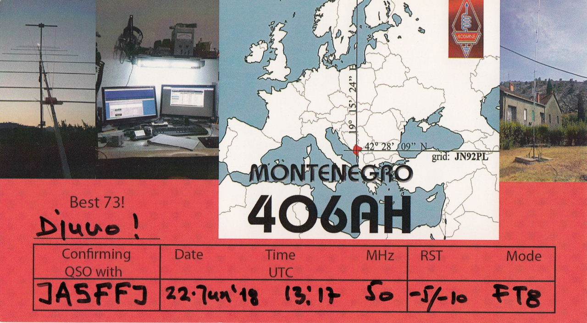
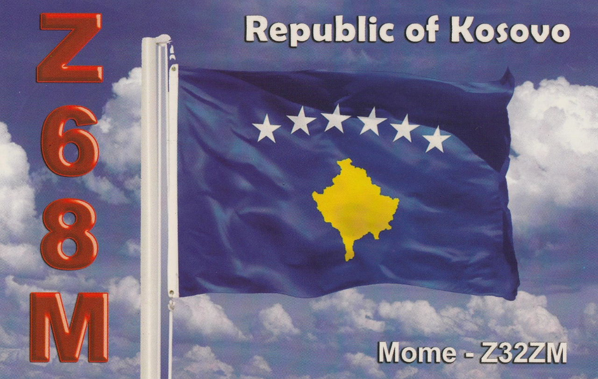
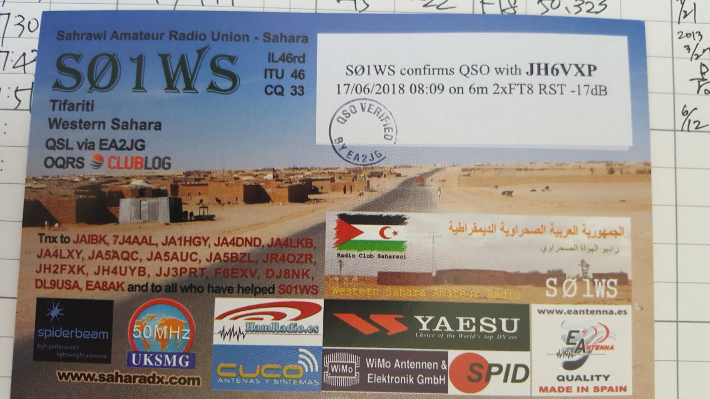

[Back Issues Aug.2018]
TIME:UTC(JST-09:00)
Report from JA1RJU(PM95sq)
31.Aug.2018(15:00b)
Report from JA1RJU(PM95sq)
30.Aug.2018(15:00b)
---------------------------------------------------------------
○(FT8=> Asia. Oceania. South East Asia. & EU方面 =>00:00z-10:00z)
---------------------------------------------------------------
DS3CHK 08:27:45- 50.313-623 FT8 -16dB CQ(PM36)
↓
(10:00z)
Report from JA1RJU(PM95sq)
29.Aug.2018(15:00b)
Report from JA1RJU(PM95sq)
28.Aug.2018(15:00b)
Report from JA1RJU(PM95sq)
27.Aug.2018(15:00b)
Report from JA1RJU(PM95sq)
26.Aug.2018(15:00b)
◎「ハムフェア・2018」
Report from JA1RJU(PM95sq)
25.Aug.2018(15:00c)
◎「ハムフェア・2018」
Report from JA1RJU(PM95sq)
24.Aug.2018(15:00b)
|
◎台風19号を追う様に四国・徳島県に上陸した"ダブル台風"の20号は、未明に四国を通過後に兵庫・姫路市から本土を縦断、各地に被害を与え日本海に抜けた。台風20号は24日午後3時頃には熱帯低気圧に変わって北海道に接近中。台風の強風圏に入っていた関東地方は、台風通過後の今日も都心で15m以上の強風が吹き荒れている。
明日(8/25～8/26)から東京お台場の"東京ビックサイト"で「ハムフェア・2018」が開催される。
●開場時間：10:00～17:00(最終日は16:00)
|
Report from JA1RJU(PM95sq)
23.Aug.2018(15:00b)
|
◎九州南部を通過して韓国に向かった台風19号に続き"ダブル台風"で四国に接近中の20号の広範囲な強風圏の影響もあり、台風によるアンテナ被害を恐れQRVする局も少ない。夏のEsシーズンも一段落したこの時期は、DX局のQSLの整理に取り掛かるのも好時期。
|


Esシーズンの珍局4O6AHと6mのDXCC-NEWとなったZ68M(Kosovo)のQSL(TNX JA5FFJ)
Report from JA1RJU(PM95sq)
22.Aug.2018(15:00b)
|
◎今日も日中のEs伝搬もなく、6mのFT8の周波数はローカル局のQSOの"デコード"だけに終わった。5月下旬から6mを賑わしたEsのDX伝搬も近場の伝搬を除き、そろそろ今季は終息の時期を迎えたか？。
|
Report from JA1RJU(PM95sq)
21.Aug.2018(15:00b)
|
◎今日は朝から強力な国内のEs伝搬もなく、6mのFT8の周波数はGWによる伝搬だけ。6mでの運用も予定しているTX5T(Australs)は明日までの予定。
台風19号は奄美大島の東北東を北西に移動中。19号の後を追う様に北上中の台風20号は、今週後半には日本本土に接近する模様。
|
---------------------------------------------------------------
○(FT8=> Asia. South East Asia. EU & AF方面 =>00:00z-11:00z)
---------------------------------------------------------------
↓
(11:00z)
Report from JA1RJU(PM95sq)
20.Aug.2018(15:00b)
---------------------------------------------------------------
○(FT8=> Asia. South East Asia. EU & AF方面 =>00:00z-11:00z)
---------------------------------------------------------------
BU2BV 00:51:30- 50.313-1747 FT8 +05dB CQ(PL05)
↓
BU2BV 00:59:30- 50.313-1747 FT8 +05dB CQ(PL05)
↓
UN8GC 08:25:30- 50.313-**** FT8 -15dB into JA1/4
↓
(11:00z)
Report from JA1RJU(PM95sq)
19.Aug.2018(15:00b)
|
◎今日は朝から夕方まで、FT8の周波数は国内のGWによる伝搬だけで久しぶりに韓国、中国、台湾などの近場のDXも入感しない静かな6mだった。小笠原諸島の西側を通過した台風19号は発達しながら北上、今週には日本列島に接近する模様。
|
Report from JA1RJU(PM95sq)
18.Aug.2018(15:00b)
---------------------------------------------------------------
○(FT8=> Asia. South East Asia. EU & AF方面 =>23:50z-11:00z)
---------------------------------------------------------------
3W3B 23:53:15- 50.313-565 FT8 -16dB CQ(OK46)
3W3B 23:55:30- 50.313-565 FT8 -10dB QSO with JA3/4
BU2BV 23:56:00- 50.313-1670 FT8 -02dB QSO with JA1
3W3B 23:56:45- 50.313-568 FT8 -01dB CQ(OK46)
↓
BU2BV 00:01:00- 50.313-1670 FT8 +15dB QSO with JA3
3W3B 00:01:45- 50.313-568 FT8 -06dB CQ(OK46) & QSO with JA1/3
↓
HL2CFY 00:03:45- 50.313-1346 FT8 -03dB CQ(PM36)
↓
3W3B 00:18:45- 50.313-568 FT8 -14dB QSO with JA1/4
↓
BV3UF 00:48:00- 50.313-2019 FT8 -16dB CQ(PL04) & QSO with JA1/2/4/6
↓
BM3GFU 01:08:45- 50.313-**** FT8 -01dB QSO with JA1/8
↓
BV3UF 01:30:45- 50.313-1969 FT8 -18dB CQ(PL04) & QSO with JA1/6/8
↓
UN8GC 04:04:30- 50.313-1526 FT8 -16dB CQ(MN83)
BV3UF 04:07:45- 50.313-1820 FT8 -11dB QSO with UN8GC
BG2KON 04:22:00- 50.313-**** FT8 -11dB QSO with JA1
BA5DX 04:27:15- 50.313-417 FT8 -08dB QSO with JA1
BG2CTW 04:33:00- 50.313-**** FT8 +08dB QSO with JA1/2
BA5DX 04:35:45- 50.313-413 FT8 -06dB CQ(PM00) & QSO with JA1/2
BG2KON 04:53:00- 50.313-554 FT8 -10dB QSO with JA1
↓
UN8GC 05:20:30- 50.313-1250 FT8 -11dB CQ(MN83)
↓
BA5DX 05:32:30- 50.313-784 FT8 -08dB QSO with JA1/5/6
↓
BD7OH 06:03:00- 50.313-**** FT8 -07dB QSO with JA1
BA5DX 06:04:30- 50.313-680 FT8 -15dB QSO with JA1
↓
BA5DX 06:31:00- 50.313-676 FT8 -08dB CQ(PM00) & QSO with JA3
BH5HAI 06:34:30- 50.313-1278 FT8 -11dB QSO with JA3
BD7OH 06:51:30- 50.313-1531 FT8 -13dB CQ(OL72) & QSO with JA1
↓
VU2NKS 07:20:30- 50.313-1677 FT8 -15dB into & QSO with JA1/2/3
↓
VU2NKS 08:14:30- 50.313-1678 FT8 -14dB QSO with JA1/2
VU2NKS 08:24:30- 50.313-1678 FT8 -03dB QSO with JA1/2/3/4/5
↓
VU2NKS 08:32:30- 50.313-1678 FT8 -06dB QSO with JA2
↓
DS5USH 08:48:30- 50.313-**** FT8 -04dB QSO with JA3
↓
VU2NKS 09:26:30- 50.313-**** FT8 -13dB into JA2/3/4/5/6/7/0
↓
(10:00z-)
Report from JA1RJU(PM95sq)
17.Aug.2018(15:00d)
---------------------------------------------------------------
○(FT8=> Asia. South East Asia. EU & AF方面 =>00:00z-14:00z)
---------------------------------------------------------------
BU2BV 00:24:45- 50.313-1441 FT8 -15dB CQ(PL05)
↓
D73G 00:27:00- 50.313-1356 FT8 -18dB CQ(PM33)
DS2XBJ 00:28:00- 50.313-1452 FT8 +07dB CQ(PM47)
D73G 00:34:30- 50.313-1360 FT8 -17dB/-08dB(QSO)
BU2BV 00:50:15- 50.313-1441 FT8 into JA4
JT1BV 00:51:00- 50.313-487 FT8 -06dB CQ(ON37) & QSO with JA1
JT1BV 00:55:30- 50.313-487 FT8 -06dB CQ(ON37) & QSO with JA1/2/JS6
BG2KON 00:58:45- 50.313-**** FT8 into JA6
↓
JT1BV 01:10:00- 50.313-505 FT8 -10dB QSO with JA1/3
↓
JT1BV 01:16:00- 50.313-508 FT8 -11dB QSY 50095 CW
↓
JT1BV 01:52:00- 50.313-**** FT8 -11dB QSO with JA7
↓
BG3UPA 06:20:00- 50.313-823 FT8 -12dB QSO with BH4IGO
BH4IGO 06:20:00- 50.313-1025 FT8 +04dB QSO with BG3UPA
BV1EK 06:22:15- 50.313-814 FT8 -19dB QSO with BG3UPA
↓
9K2YM 09:02:45- 50.313-1406 FT8 -12dB CQ(LL48)
BG2KON 09:10:45- 50.313-1341 FT8 -03dB QSO with JA3
↓
BG2KON 09:40:30- 50.313-2353 FT8 -04dB QSO with JA1/2
↓
4X4DK 12:09:00- 50.313-**** FT8 -18dB into JA7
↓
UN8GC 13:40:00- 50.313-**** FT8 -19dB QSO with JA1
↓
(14:00z)
Report from JA1RJU(PM95sq)
16.Aug.2018(15:00c)
---------------------------------------------------------------
○(FT8=> Asia. South East Asia. EU & AF方面 =>23:00z-10:00z)
---------------------------------------------------------------
D73G 00:14:30- 50.313-956 FT8 -09dB QSO with JA1/2/3
↓
D73G 00:28:00- 50.313-957 FT8 -22dB CQ(PM33)
↓
D73G 00:50:00- 50.313-956 FT8 -04dB QSO with JA1/2/3/9
↓
DS5USH 00:52:00- 50.313-1078 FT8 -19dB CQ(PM45)
↓
BU2BV 01:09:45- 50.313-1497 FT8 -18dB CQ(PL05) QSO with JA1/3/4/5/9/0
↓
KG6JDX 01:35:45- 50.313-**** FT8 into JA1
↓
BG2KON/QRP 03:57:30- 50.313-1445 FT8 -15dB CQ(PN25)
↓
BG2KON 03:59:15- 50.313-1368 FT8 -09dB QSO with JA5
BG2KON 04:04:30- 50.313-1368 FT8 -15dB QSO with JA1/2
↓
(10:00z)
Report from JA1RJU(PM95sq)
15.Aug.2018(15:00c)
---------------------------------------------------------------
○(FT8=> Asia. South East Asia. EU & AF方面 =>23:00z-10:00z)
---------------------------------------------------------------
BX2AFW 03:23:30- 50.313-**** FT8 into JA1(PM95)
↓
KG6JDX 05:30:30- 50.313-**** FT8 into JA1(PM95)
↓
D73G 08:08:00- 50.313-**** FT8 Report From DS4FMG(AS-084)
↓
(10:00z)
Report from JA1RJU(PM95sq)
14.Aug.2018(15:00b)
---------------------------------------------------------------
○(FT8=> Asia. South East Asia. EU & AF方面 =>23:00z-10:00z)
---------------------------------------------------------------
BD7OH 00:05:30- 50.313-1662 FT8 -14dB CQ(OL72)
↓
BD7OH 01:16:30- 50.313-1668 FT8 +00dB QSO with JA1/2/3/6
↓
BU2BV 01:40:15- 50.313-732 FT8 -15dB QSO with JA1
BD8NBG 01:44:15- 50.313-1950 FT8 +12dB CQ(OL36) & QSO with JA1/2
BI4SDT 01:55:00- 50.313-1645 FT8 +03dB CQ(PM01) & QSO with JA1
BD7OH 01:59:00- 50.313-1568 FT8 +08dB CQ(OL72)
↓
BA5DX 02:16:00- 50.313-2124 FT8 -01dB QSO with JA3
↓
（BD7OH.BI4SDT.BD8NBG.3W3B)
↓
3W3B 02:28:45- 50.313-574 FT8 -07dB QSO with JA1
3W3B 02:29:15- 50.313-574 FT8 -06dB CQ(OK46) QSO with JA1/4/7
↓
BG8NBG 02:40:15- 50.313-1708 FT8 +00dB CQ(OL36) QSO with EX9QT
BG8NBG 02:45:45- 50.313-1707 FT8 -08dB QSO with EX8MLT
↓
EX9QT 02:56:00- 50.313-**** FT8 into JA1
↓
BD7OH 03:08:30- 50.313-1568 FT8 +09dB QSO with UN7TW
BD7OH 03:14:15- 50.313-1570 FT8 +05dB CQ(OL72)
↓
BU2BV 03:25:15- 50.313-734 FT8 -09dB CQ(PL05)
↓
JT1BV 05:56:15- 50.313-601 FT8 -04dB CQ(ON37) & QSO with JA1/7
↓
JD1BHA 07:08:30- 50.313-1005 FT8 -14dB QSO with JA1/7/0
↓
JT1BV 07:57:00- 50.313-624 FT8 -10dB CQ(ON37)
JD1BHA 08:03:00- 50.313-1005 FT8 -15dB into JA1
↓
BA5DX 09:39:00- 50.313-967 FT8 -08dB CQ(PM00) & QSO with JA1
↓
(10:00z)
Report from JA1RJU(PM95sq)
13.Aug.2018(15:00c)
---------------------------------------------------------------
○(FT8=> Asia. South East Asia. EU & AF方面 =>23:00z-11:00z)
---------------------------------------------------------------
JT1BV 08:24:30- 50.313-497 FT8 -14dB CQ(ON37)
JT1BV 08:26:00- 50.313-497 FT8 +03dB CQ(ON37)
↓
(11:00z)
|
◎関東地方は午前中の晴天から急に雲行きが怪しくなり、1400JST頃に真夜中の様な暗さとなった途端に”1万発の花火"が炸裂する様な連続する雷鳴と稲光が途切れなく続く"ゲリラ豪雨"に見舞われた。幸い直雷は避けられたものの、隣接する市や区では落雷で停電する大荒れの天候だった。2時間程で荒れた天候も治まった後も連続的なS9+のノイズが続き、6mのFT8ではノイズが無くなった1720JST頃になってデコードしたJT1BVのCQが唯一のDXの入感となった。
|
Report from JA1RJU(PM95sq)
12.Aug.2018(15:00c)
---------------------------------------------------------------
○(FT8=> Asia. South East Asia. EU & AF方面 =>23:00z-11:00z)
---------------------------------------------------------------
BA1PK 23:18:30- 50.313-1800 FT8 -01dB QSO with JA3/6
BG6CJR 23:19:45- 50.313-463 FT8 -22dB CQ(OM90)
DS3CHK 23:40:15- 50.313-1115 FT8 -11dB CQ(PM36)
↓
6K2FDL 00:24:00- 50.313-1560 FT8 -08dB CQ(PM37) & QSO with JA1/3
DS5USH 00:38:15- 50.313-1366 FT8 -07dB CQ(PM45) & QSO with JA6
HL2IFR 00:43:15- 50.313-1361 FT8 -05dB QSO with 6K2FDL
↓
JT1BV 01:06:30- 50.313-**** FT8 into JA3
JT1BV 01:19:30- 50.313-**** FT8 -14dB QSO with JA3
HL3GOB 01:32:30- 50.313-478 FT8 +09dB QSO with JA1
EX8MLT 01:35:00- 50.313-**** FT8 -14dB QSO with JA1
JT1BV 01:35:30- 50.313-499 FT8 -04dB CQ(ON37) & QSO with JA1
EX8MLT 01:37:30- 50.313-1538 FT8 -09dB CQ(MN72) QSO with JA1/3/5/8
↓
BH4UTT 01:59:00- 50.313-933 FT8 -04dB QSO with JA1
JT1BV 01:59:00- 50.313-499 FT8 -13dB QSO with JA1/0
BG1QJE 02:00:15- 50.313-609 FT8 QSO with JA6/0
EX8MLT 02:03:00- 50.313-**** FT8 +08dB QSO with JA9
↓
EX8MLT 02:42:00- 50.313-1527 FT8 -01dB QSO with JA1/7/BH4
EX8MLT 02:52:00- 50.313-1540 FT8 -10dB CQ(MN72)
↓
UN7TW 05:02:45- 50.313-1270 FT8 -15dB QSO with EX9QT
EX9QT 05:03:00- 50.313-1279 FT8 -15dB CQ(MN82) & QSO with JA0
UN7TW 05:05:15- 50.313-1269 FT8 -07dB QSO with JA0
UN8GC 05:14:00- 50.313-**** FT8 +06dB QSO with JA7/0
HL2ADY 05:16:30- 50.313-831 FT8 -15dB CQ(PM37) & QSO with JA1
UK9AA 05:21:30- 50.313-**** FT8 -14dB QSO with JA1
UN8GC 05:25:00- 50.313-1534 FT8 -12dB CQ(MN83) & QSO with JA1
EX9QT 05:29:00- 50.313-**** FT8 -15dB QSO with JA1
↓
(BG2KON.UN8GC.HL2IFR.UK9AA.UN7TW.BG2KAJ)
↓
EX9QT 06:00:30- 50.313-1251 FT8 -02dB CQ(MN83) & QSO with JA1/9
EK9AA 06:03:00- 50.313-1753 FT8 -06dB CQ(MN41) & QSO with JA0
↓
(EX9QT.UN7TW.UK9AA.UN8GC.6K2IGH.HL2AEY.UN8GU.HL3AMO.DS1JJV.
↓
EX9QT 06:43:00- 50.313-1250 FT8 -15dB CQ & QSO with JA1
↓
UN8GU 06:47:30- 50.313-**** FT8 -11dB QSO with JA1/4
↓
DU7/PA0HIP 06:54:45- 50.313-**** FT8 -17dB QSO with JA1
↓
JT1BV 07:14:30- 50.313-**** FT8 -11dB QSO with JA2/9
JT1BV 07:23:00- 50.313-497 FT8 -07dB CQ(ON37) & QSO with JA1/2/3
↓
JT1BU 08:10:30- 50.313-1029 FT8 -07dB CQ(ON37)
BG9NJY 08:23:45- 50.313-1965 FT8 -14dB CQ(OM38)
↓
JT1BV 10:25:00- 50.313-500 FT8 -03dB QSO with JA1/2
↓
(11:00z)
|
◎今週は、北米、ヨーロッパ方面の6mのコンデションは大幅に落ち込んでしまった。入感しても短時間のスポットのオープンとなり、今シーズンの夏の伝搬もそろそろ終わりに近づいている。そんな中、今日の07:00z頃にアフリカのガボン(GABON)のTR8CAからJAのFT8の信号が5局(JA＝2、JA3=2、JA4＝1)入感したとリポートされた。EsシーズンのTR8CAとの2way-QSOは出来なかったが、西サハラのS01WSに続くEsシーズンのアフリカ西海岸へのルートがオープンする可能性がある事が確認された。
|
Report from JA1RJU(PM95sq)
11.Aug.2018(15:00c)
---------------------------------------------------------------
○(FT8=> Asia. South East Asia & EU方面 =>21:00z-10:00z)
---------------------------------------------------------------
6K2LIX 23:52:45- 50.313-902 FT8 +03dB QSO with JA1
KG6DX 23:52:45- 50.313-**** FT8 -16dB into JA1
6K2LIX 00:01:45- 50.313-902 FT8 -10dB CQ(PM36)
↓
BG9NJY 00:37:00- 50.313-**** FT8 -13dB QSO with JA1
↓
BI4QZW 01:31:15- 50.313-**** FT8 -16dB QSO with JA1
BI4QZW 01:32:45- 50.313-1492 FT8 -08dB CQ(PM01)
↓
DS4OVT 02:02:30- 50.313-**** FT8 -12dB QSO with JA1
↓
BG2KON 04:52:15- 50.313-750 FT8 -19dB QSO with JA1/0
↓
HL2AEY 06:58:30- 50.313-**** FT8 QSO with JA1
JT1BU 06:58:45- 50.313-865 FT8 +07dB QSO with JA1
↓
9K2YM 07:04:30- 50.313-**** FT8 into JA1
↓
JT1BU 07:12:00- 50.313-836 FT8 +10dB CQ(ON37)
↓
JT1BU 07:27:00- 50.313-836 FT8 +10dB QSO with JA1's/DS2
↓
HL2AEY 08:18:45- 50.313-**** FT8 -09dB QSO with JA8
↓
JT1BV 08:38:00- 50.313-484 FT8 -03dB CQ(ON37) & QSO with JA8
JT1BV 08:48:00- 50.313-486 FT8 -03dB CQ(ON37) & QSO with JA1
↓
HL2IFR 09:24:15- 50.313-2266 FT8 -09dB CQ(PM37)
JT1BV 09:30:00- 50.313-458 FT8 +03dB CQ(ON37) & QSO with JA1/7
↓
(11:00z-)
Report from JA1RJU(PM95sq)
10.Aug.2018(15:00c)
---------------------------------------------------------------
○(FT8=> Asia. South East Asia & EU方面 =>21:00z-10:00z)
---------------------------------------------------------------
BD7OH 00:54:15- 50.313-1667 FT8 -17dB CQ(OL72)
↓
9M2TO 02:24:00- 50.313-**** FT8 -12dB QSO with JA1/2
9M2TO 02:38:35- 50.313-1831 FT8 -15dB CQ(OJ05)
↓
9M2TO 02:51:30- 50.313-**** FT8 -14dB QSO with JA1
↓
9M2TO 03:26:00- 50.313-**** FT8 -08dB QSO with JA1
↓
DU6/PE1NSQ 04:58:00- 50.313-**** FT8 into JA1(Talisay City)
↓
DU7/PA0HIP 05:06:00- 50.313-1927 FT8 -12dB CQ(PK10)
↓
DU7/PA0HIP 05:12:45- 50.313-1701 FT8 -10dB QSO with JA1
DU7/PA0HIP 05:15:45- 50.313-1700 FT8 -11dB CQ(PK10)
↓
BV2KI 07:41:30- 50.313-**** FT8 -02dB into JA2
BV2KI 07:53:00- 50.313-**** FT8 -11dB QSO with JA1/2
↓
BA5DK 08:12:00- 50.313-**** FT8 +06dB QSO with JA1
BA5DK 08:19:30- 50.313-2094 FT8 -24dB CQ(PM00)
↓
BI4SDT 08:32:45- 50.313-2464 FT8 -17dB CQ(PM01)
↓
(10:00z)
Report from JA1RJU(PM95sq)
09.Aug.2018(15:00c)
---------------------------------------------------------------
○(FT8=> Asia. South East Asia & EU方面 =>23:00z-10:00z)
---------------------------------------------------------------
DS5USH 00:29:30- 50.313-677 FT8 +05dB QSO with JA1/7
BG2KAJ/2 00:45:00- 50.313-**** FT8 +06dB QSO with JA1
↓
JT1BV 01:49:00- 50.313-**** FT8 into JA1(PM95)
↓
HL1LUA 04:07:00- 50.313-783 FT8 +11dB QSO with JA1
↓
BG2KON 05:31:45- 50.313-**** FT8 -21dB into JA3
BD7OH 06:30:30- 50.313-1669 FT8 -14dB QSO with JA7
BD7OH 06:36:30- 50.313-1671 FT8 -12dB CQ(OL72)
DS2JJV 06:49:30- 50.313-1542 FT8 +09dB QSO with JA1
JT1BV 07:19:00- 50.313-**** FT8 +00dB QSO with JA3/6
BA5DX 07:23:30- 50.313-2012 FT8 -10dB QSO with JA7
BD7OH 07:38:30- 50.313-1672 FT8 -12dB QSO with JA3
BG4VRG 07:58:15- 50.313-**** FT8 -05dB QSO with JA1
BI4SDT 08:06:15- 50.313-**** FT8 -13dB QSO with JA1
↓
BV2FB 08:11:45- 50.313-1037 FT8 -21dB CQ(PL05)
BV2KI 08:14:15- 50.313-**** FT8 -16dB QSO with JA1
BD7TBP 08:29:00- 50.313-**** FT8 +03dB QSO with JA1
↓
(10:00z)
|
◎台風13号は未明に房総半島沖をゆっくり通過、関東の太平洋沿岸に被害を与え、現在東北地方の太平洋沖を北上中。関東地方の内陸部はまだ台風の"強風圏”に入っているが、既に風による影響は無い。 午後から晴天に戻り気温も30度超えの真夏日に戻った。
|
Report from JA1RJU(PM95sq)
08.Aug.2018(15:00c)
---------------------------------------------------------------
○(FT8=> NA. South East Asia & EU =>03:00z-10:00z)
---------------------------------------------------------------
K0GU 22:33:15- 50.313-**** FT8 -10dB into JA7(QM08)
↓
BG2KAJ/2 00:46:00- 50.313-1435 FT8 +06dB CQ
↓
JT1BV 06:59:00- 50.313-504 FT8 -13dB CQ(ON37)
↓
JT1BV 07:17:00- 50.313-506 FT8 -03dB/-02dB(QSO)
↓
4X4DK 07:43:30- 50.313-**** FT8 -16dB into JA1/6
↓
(09:00z)
|
◎小笠原諸島東部で発生した台風13号は、伊豆諸島を暴風雨に巻き込みながらゆっくり関東・房総半島に向かっている。房総半島沖で方向を北側に転換すると予想されているが、房総(千葉県)に上陸する可能性も残されている。既に関東地方の東部は台風の"強風圏"に入っているが、東京西部の内陸部では18:00JST現在まだ風の影響は受けていない。
|
Report from JA1RJU(PM95sq)
07.Aug.2018(15:00c)
----------------------------------------------------------------
○(FT8=> 本日の入感局 NA =>22:00z-00:40z)
----------------------------------------------------------------
VE7DAY 22:22:30- 50.313-**** FT8 -121B into JA7
W7DGZ 22:44:30- 50.313-**** FT8 -13db into JA7
KD7PY 22:02:30- 50.313-1846 FT8 -109B QSO with JA1
WB4LAR 23:12:00- 50.313-**** FT8 -18dB into JA7
W7FI 23:14:00- 50.313-**** FT8 -03dB QSO with JA7
AA7A 23:15:30- 50.313-**** FT8 -07dB into JA4
KA9CFD 23:15:30- 50.313-**** FT8 into JA2
VE7SV 23:17:00- 50.313-**** FT8 -19dB into JA1
K7OFT 23:20:00- 50.313-1630 FT8 -12dB into JA1
W7DGZ 23:21:00- 50.313-**** FT8 QSO with JA3
VE7DAY 23:32:00- 50.313-**** FT8 -12db QSO with JA4
W7BA 23:28:00- 50.313-**** FT8 -12db QSO with JA1
N1RWY (AZ) 23:29:30- 50.313-**** FT8 -14db into JA3/4/5
K7OFT 23:31:30- 50.313-**** FT8 -15dB QSO with JA1
W6RMJ 23:32:30- 50.313-**** FT8 -15dB QSO with JA1
K7OFT 23:36:00- 50.313-1630 FT8 -05dB QSO with JA1/2/3/4/7
W7FI 23:42:00- 50.313-**** FT8 -15dB QSO with JA1
↓
VE7SL 23:45:00- 50.313-**** FT8 -19dB into JA6
W7BA 23:45:00- 50.313-**** FT8 -15dB into JA8SO with JA1
W7OK 23:46:00- 50.313-**** FT8 -18dB QSO with JA7
W7VXS 23:49:00- 50.313-**** FT8 QSO with JA2
W7GJ 23:50:00- 50.313-**** FT8 -15dB QSO with JA1
KD7PY 23:51:00- 50.313-652 FT8 -06dB QSO with JA1
K7OFT 23:51:00- 50.313-1630 FT8 -03dB QSO with JA4
↓
(VE7DAY.W7BA.K7OFT.W7VXS.W7CCY)
↓
K7OFT 00:01:00- 50.313-1632 FT8 -11dB/-14dB(QSO)
VA7FC 00:03:30- 50.313-**** FT8 -17dB QSO with JA1
↓
(VE7DAY.K7OFT.W7FI.W7CCY.W7BA.VE7SL.KD7PY.VE7SV.W7GJ)
↓
W7FI 00:57:00- 50.313-**** FT8 +05dB QSO with JA7
VE7SV 00:58:30- 50.313-**** FT8 -12dB QSO with JA7
W7FI 01:03:30- 50.313-**** FT8 -12dB QSO with JA4/6
KE7UIU 01:05:00- 50.313-**** FT8 -03dB QSO with JA7
↓
(00:30z)
---------------------------------------------------------------
○(FT8=> South East Asia & EU =>03:00z-10:00z)
---------------------------------------------------------------
BA5DX 05:06:30- 50.313-772 FT8 -03dB QSO with JA2) & CQ(PM00)
↓
9K2AM 07:16:00- 50.313-1026 FT8 -10dB CQ(LL48)
↓
EA3LL 07:26:00- 50.313-**** FT8 -16dB into JS6
↓
9K2YM 07:38:15- 50.313-**** FT8 -03dB into JA7
9K2YM 07:40:15- 50.313-1005 FT8 -21dB QSO with JA6
9K2YM 07:42:15- 50.313-1006 FT8 -20dB CQ(LL48) into JA1/7/0
↓
4X4DK 08:22:00- 50.313-**** FT8 into JR6/JS6(PL36)
↓
(10:00z)


7月21日に初めてJAにオープンした=Liechtenstein=のHB0CCのQSL(TNX JN1JFC)
Report from JA1RJU(PM95sq)
06.Aug.2018(15:00c)
---------------------------------------------------------------
○(FT8=> NA. South East Asia & EU =>03:00z-11:00z)
---------------------------------------------------------------
EX8MLT 02:59:30- 50.313-1540 FT8 -16dB CQ(MN82)
↓
EX8MLT 03:28:30- 50.313-1537 FT8 -16dB CQ
↓
IS0AWZ 06:15:00- 50.313-**** FT8 into JA2
IS0AWZ 06:26:30- 50.313-**** FT8 -12dB into JA1/0
↓
IS0GQX 06:30:00- 50.313-1734 FT8 -17dB CQ AS(JM49)
IS0GQX 06:30:30- 50.313-1734 FT8 -18dB into JA1
SV1DH 06:32:30- 50.313-**** FT8 -18dB into JA2/7
IS0AWZ 06:32:30- 50.313-**** FT8 -18dB into JA1
↓
SP5GMM 06:51:00- 50.313-**** FT8 -19dB into JA3
DK2LO 06:56:00- 50.313-**** FT8 -15dB into JA1
SM7DVO 07:06:00- 50.313-**** FT8 -11dB into JA2
SP2GUB 07:06:15- 50.313-**** FT8 -14dB into JA2
OZ1HFG 07:09:15- 50.313-**** FT8 -14dB into JA2
↓
(KL7HBK 07:30:00- 50.313-1541 FT8 -18dB into JA1)
↓
SV2JAO 07:32:30- 50.313-**** FT8 -14dB into JA7
↓
(KL7HBK 07:50:00- 50.313-1541 FT8 -04dB QSO with JA1/2/3/0)
↓
IT9RZR 08:35:00- 50.313-**** FT8 -17dB into JA5
↓
(11:00z)
Report from JA1RJU(PM95sq)
05.Aug.2018(15:00d)
----------------------------------------------------------------
○(FT8=> 本日の入感局 NA =>22:00z-00:40z)
----------------------------------------------------------------
K5HK 22:59:00- 50.313-2010 FT8 -15dB into JA1(QM06)
W0VTT 22:59:45- 50.313-**** FT8 into JA0
N0TB 23:01:00- 50.313-**** FT8 -13dB into JA7/0
K0KUK 23:16:00- 50.313-**** FT8 -05dB QSO with JA7(QM08)
W9FF 23:17:00- 50.313-**** FT8 -13dB into JA0
K2DRH 23:19:30- 50.313-**** FT8 -18dB into JA7
W0VTT 23:20:30- 50.313-**** FT8 -08dB into JA0
N6ML 23:27:00- 50.313-**** FT8 -14dB into JA0
N9ISN 23:27:00- 50.313-**** FT8 -18dB into JA7
↓
K5XI 23:47:00- 50.313-**** FT8 -17dB QSO with JA7
N6ML 23:52:30- 50.313-**** FT8 -16dB QSO with JA1(QM06)
K5XI 00:10:00- 50.313-**** FT8 -09dB QSO with JA0
K5XI 00:22:30- 50.313-**** FT8 -16dB QSO with JA1
↓
WA7JAY 00:36:00- 50.313-**** FT8 -18dB into JA3/7
↓
(-00:40z)
---------------------------------------------------------------
○(FT8=> Asia. South East Asia & EU =>02:00z-11:00z)
---------------------------------------------------------------
HL0S 02:09:00- 50.313-1214 FT8 -11dB CQ(PM48)
↓
OH7KNM 06:09:00- 50.313-1663 FT8 -06dB into JA1 & QSO
IS0GQX 06:09:30- 50.313-**** FT8 into JA1/3
OH7KNM 06:10:30- 50.313-1665 FT8 -08dB QSO with JA1/9
IS0GQX 06:11:30- 50.313-**** FT8 QSO with JA1
↓
OH7KNM 06:12:00- 50.313-1663 FT8 -04dB QSO with JA1/2/3/9/0
EA7HG 06:12:00- 50.313-**** FT8 -18dB into JA1
OH3XA 06:14:00- 50.313-1794 FT8 -09dB QSO with JA3
OH7UE 06:15:00- 50.313-1788 FT8 -04dB CQ(KP52) & QSO with JA1
↓
OH3XA 06:20:30- 50.313-1794 FT8 -08dB QSO with JA1/9
OH2BPU 06:20:30- 50.313-**** FT8 -11dB QSO with JA1/2
OH3LCH 06:20:30- 50.313-**** FT8 -16dB into JA7
OH7KNM 06:21:00- 50.313-1675 FT8 -07dB QSO with JA1
OH3SR 06:27:00- 50.313-1051 FT8 -14dB QSO with JA8
OH3SR 06:28:00- 50.313-1051 FT8 +02dB QSO with JA1
EA7HG 06:28:00- 50.313-**** FT8 QSO with JA4
OH3XA 06:30:00- 50.313-1794 FT8 -03dB/-05dB(QSO)
OH1MLZ 06:31:00- 50.313-**** FT8 -04dB CQ(KP52) & QSO with JA1
OH7UE 06:31:30- 50.313-2064 FT8 -10dB QSO with JA12/3/5
↓
(OH3SR.OH3XA.OH2BPU.OH1MLZ.OH7KNM.OH2ID)
↓
IS0AWZ 06:35:00- 50.313-**** FT8 QSO with JA3
↓
OH7PI 06:38:30- 50.313-2596 FT8 -05dB CQ(KP42) & QSO with JA1
↓
OH0Z 06:41:00- 50.313-**** FT8 -09dB QSO with JA1
↓
SP4MPB 06:52:30- 50.313-**** FT8 -13dB into JA0
OH7PI 06:52:30- 50.313-**** FT8 -11dB into JA4/5
OH6WD 06:53:00- 50.313-**** FT8 -14dB into JA6/0
IS0GQX 06:53:30- 50.313-**** FT8 -20dB into JA5
↓
(OH3SR.OH6WD.OH7PI.OH1AZL.OH3XX.OH1MLZ.I4CIL.EA6VQ.OE6MDF.EA6SX.EA6SX)
↓
IK0FTA 07:01:00- 50.313-**** FT8 QSO with JA5
↓
(IW5DHN.OH3SR.EA6SX.OH0Z.OH6WD.OG2M)
↓
SV1DH 07:05:30- 50.313-1995 FT8 -13dB CQ AS(KM27) & QSO with JA1
↓
(IK4GTC.OG2M.OH3SR.OH0Z=JA6/0.OH6WD.IK5QPV.EA6XQ.EA1AR.TA1BM=JA1.EA7AJR)
↓
CT1IUA 07:28:30- 50.313-1995 FT8 QSO with JA6
F4VPC 07:29:30- 50.313-**** FT8 -16dB QSO with JA1
ES1BH 07:32:30- 50.313-**** FT8 -16dB QSO with JA2
OH2EE 07:38:00- 50.313-**** FT8 QSO with JA6
ES2JL 07:44:30- 50.313-**** FT8 -08dB QSO with JA2
OZ3K 07:49:45- 50.313-**** FT8 -09dB into JA2
OH0Z 07:52:30- 50.313-**** FT8 -13dB into JA1
SM2A 07:52:30- 50.313-**** FT8 -10dB into JA0
LY2IJ 08:02:30- 50.313-**** FT8 -19dB into JA1
↓
(EA7CU.OH2XX.EA7HG.CP6CPH.CT1IUA.SP5ENA.EA6VQ.SV4SBI.EA5ISZ.SM5EPO)
↓
(11:00z-)
↓
Report from JA1RJU(PM95sq)
04.Aug.2018(15:00c)
---------------------------------------------------------------
○(FT8=> Asia and South East Asia & EU =>22:00z-11:00z)
---------------------------------------------------------------
Z32ZM 07:02:00- 50.313-**** FT8 -15dB into JA9
↓
LY2IJ 07:04:30- 50.313-2258 FT8 -18dB into JA1
LY2IJ 07:05:30- 50.313-2258 FT8 -18dB QSO with JA1
↓
Z32ZM 07:06:30- 50.313-**** FT8 -14dB into JA1
LY2IJ 07:08:30- 50.313-2258 FT8 -24dB QSO with JA1
LY2IJ 07:10:30- 50.313-2258 FT8 +01dB QSO with JA1/3
↓
LY2IJ 07:16:30- 50.313-2259 FT8 -02dB/+02dB(QSO)
LY2IJ 07:17:30- 50.313-2259 FT8 +01dB QSO with JA1/2/3/5/7/0
↓
LY2IJ 07:25:00- 50.313-2260 FT8 -01dB QSO with JA4
LY2IJ 07:26:00- 50.313-2261 FT8 -06dB QSO with JA1/3/7/0
↓
OH7PI 07:27:15- 50.313-**** FT8 -17dB into JA2
LY2IJ 07:27:30- 50.313-2261 FT8 +01dB QSO with JA1/3/7/0
↓
OH7PI 07:34:15- 50.313-**** FT8 -15dB QSO with JA1/2/7/0
↓
Z32ZM 07:35:30- 50.313-**** FT8 into JA1
YL2AO 07:40:30- 50.313-**** FT8 -15dB into JA1/2/3//4
LY2BAW 07:45:30- 50.313-**** FT8 -12dB QSO with JA1
YL2AO 07:46:00- 50.313-**** FT8 -16dB QSO with JA3/4
↓
LY2BAW 07:52:00- 50.313-**** FT8 -13dB QSO with JA0
↓
OH7PI 07:54:30- 50.313-**** FT8 -09dB into JA1/0
↓
LY2BAW 07:56:00- 50.313-**** FT8 -13dB into JA9/0 & QSO with JA1
↓
LY2IJ 08:03:30- 50.313-**** FT8 -19dB QSO with JA2
YL2CP 08:09:30- 50.313-**** FT8 -14dB into JA6
LY2BAW 08:10:30- 50.313-**** FT8 -11dB QSO with JA2/7
SV1DH 08:15:30- 50.313-**** FT8 -17dB into JA3
YL2AO 08:16:00- 50.313-**** FT8 -14dB QSO with JA5
YL2CP 08:19:00- 50.313-**** FT8 -20dB into JS6 & QSO with JA6
LY2BAW 08:22:00- 50.313-**** FT8 -13dB into JA5/6
↓
LY2BAW 08:30:30- 50.313-**** FT8 -14dB into JA2/6
↓
(LY2IJ.HL0S.LY2BAW.YL2CP.OH2MA.SV1DH.VR2VAZ.VR2IL.VR2ZLK.VR2XRW,)
Report from JA1RJU(PM95sq)
03.Aug.2018(15:00c)
----------------------------------------------------------------
○(FT8=> 本日の入感局 NA =>21:00z-03:00z)
----------------------------------------------------------------
N6ML 21:13:00- 50.313-**** FT8 -14dB QSO with JA1
↓
N3RC 21:20:30- 50.313-**** FT8 -18dB into JA1
K6SRZ 21:24:30- 50.313-**** FT8 -20dB into JA1
N7IR 21:24:30- 50.313-**** FT8 QSO with JA7
↓
(KG7NV.NH6Y.N7AMA.AA7A.K9YC.WA6ZTY.AD6D.K6SRZ.KJ6P)
↓
NN4X 22:41:30- 50.313-**** FT8 QSO with JA7
↓
(WA6ZTY.WX4G.K8XS.W6GJB.N6JV)
↓
N6JV 00:50:30- 50.313-2428 FT8 -18dB/07dB(QSO)
N6ML 00:57:00- 50.313-**** FT8 -11dB QSO with JA0
↓
(W6XK.N6JV.W6KF)
↓
W6KF 01:38:30- 50.313-**** FT8 -22dB QSO with JA7
N6JV 02:02:00- 50.313-**** FT8 -13dB QSO with JA4
---------------------------------------------------------------
○(FT8=> Western Asia and South East Asia & EU =>23:50z-11:00z)
---------------------------------------------------------------
A45XR 23:50:15- 50.313-**** FT8 -19dB into JA1
↓
DU7/PA0HIP 00:19:45- 50.313-**** FT8 -04dB QSO with JA8
↓
I1FLB 02:09:15- 50.313-**** FT8 -17dB into JA5/6
JD1BHA 02:12:30- 50.313-1007 FT8 -12dB into JA1/8
JD1BHA 02:14:30- 50.313-1007 FT8 -04dB QSO with JA1/8
↓
JD1BHA 02:31:00- 50.313-1008 FT8 -24dB CQ(QL16) & QSO
↓
JD1BHA 02:43:00- 50.313-1008 FT8 -09dB QSO with JA1
9K2YM 02:43:00- 50.313-**** FT8 into JA7
↓
JD1BHA 03:03:00- 50.313-1008 FT8 into JA2
↓ (BH4IGO.BG6CJR.)
HL0S 03:06:15- 50.313-1208 FT8 +03dB QSO with JA1/7/8/9
HL0S 03:11:45- 50.313-1207 FT8 +02dB CQ(PM48)
↓
HL0S 03:24:45- 50.313-1214 FT8 +10dB QSO with JA1/2/3/4/5/6
↓
3W3B 03:52:30- 50.313-**** FT8 -15dB into JA1
3W3B 04:05:15- 50.313-**** FT8 -11dB QSO with JA1/7/9
↓
SP5ENA 07:06:30- 50.313-**** FT8 -12dB QSO with JS6
↓
IK2GSO 07:17:30- 50.313-**** FT8 -12dB into JA6/JS6
SP8SN 07:20:30- 50.313-**** FT8 -08dB QSO with JS6
OZ3K 07:25:00- 50.313-**** FT8 -10dB into JS6
SP5ENA 07:26:30- 50.313-**** FT8 -18dB into JA1(QM05)
F5BZB 07:27:30- 50.313-**** FT8 -18dB into JA6
SP4MPB 07:28:30- 50.313-**** FT8 -05dB into JS6
SM0EUI 07:28:30- 50.313-**** FT8 -14dB into JA6
UT7QF 07:28:30- 50.313-**** FT8 -16dB into JA6
IW4AOT 07:30:30- 50.313-**** FT8 -17dB into JA6
IK4ISR 07:32:00- 50.313-**** FT8 -15dB into JA6
SP8SN 07:36:00- 50.313-**** FT8 -10dB QSO with JA1(QM05)
UT7QF 07:38:00- 50.313-**** FT8 -08dB QSO with JA6
9H1TX 07:39:30- 50.313-**** FT8 QSO with JA6
SP4MPB 07:41:00- 50.313-**** FT8 -16dB into JA4
YU7EF 07:43:30- 50.313-**** FT8 -19dB into JA6
SQ8IFG 07:18:30- 50.313-**** FT8 -15dB into JA1
SP9HPA 07:51:00- 50.313-**** FT8 -14dB into JA1
Z32ZM 07:52:30- 50.313-**** FT8 -15dB into JA6
SP8SN 07:55:00- 50.313-**** FT8 -16dB into JA1
OH3SR 08:03:00- 50.313-**** FT8 -15dB into JA6
G4RRA 08:05:00- 50.313-**** FT8 -13dB into JS6
G0GGG 08:06:00- 50.313-**** FT8 -19dB into JS6
SP9HPA 08:07:30- 50.313-**** FT8 -11dB QSO with JA1(QM05)
G3TXF 08:08:30- 50.313-**** FT8 -16dB QSO with JA5
G4RRA 08:08:30- 50.313-**** FT8 -13dB QSO with JS6
SM4CSX 08:15:30- 50.313-**** FT8 -18dB into JS6
OH1ND 08:17:00- 50.313-**** FT8 -16dB into JA5
EI3KD 08:19:30- 50.313-**** FT8 -21dB into JS6
SM4FXR 08:22:00- 50.313-**** FT8 -13dB into JS6
SM5CUI 08:24:30- 50.313-**** FT8 -16dB into JA5
OH0Z 08:26:15- 50.313-**** FT8 -17dB QSO with JS6
OZ2PBS 08:31:00- 50.313-**** FT8 -18dB into JA5
GM3SEK 08:33:15- 50.313-**** FT8 -15dB into JS6
SM4EMO 08:33:00- 50.313-**** FT8 -22dB into JS6
OH0Z 08:44:30- 50.313-**** FT8 -08dB QSO with JA6
G8BCG 08:45:00- 50.313-**** FT8 -16dB QSO with JS6
SM4FXR 08:52:00- 50.313-**** FT8 QSO with JA6
EI4DQ 09:06:30- 50.313-**** FT8 into JR6(PL36)
EI3KD 09:21:00- 50.313-**** FT8 -17dB into JR6(PL36)
Report from JA1RJU(PM95sq)
02.Aug.2018(15:00d)
----------------------------------------------------------------
○(FT8=> 本日の入感局 NA =>22:00z-02:00z)
----------------------------------------------------------------
K6EID 22:03:30- 50.313-**** FT8 -19dB into IA1
KC3OL 22:03:30- 50.313-**** FT8 -18dB QSO with JA1
K4PI 22:03:30- 50.313-1668 FT8 -14dB QSO with JA1
KA9CFD 22:03:30- 50.313-640 FT8 -22dB into JA1
KX4R 22:04:00- 50.313-1019 FT8 -24dB QSO with JA2
N6WS 22:04:00- 50.313-**** FT8 -18dB QSO with JA1
N0LWF 22:04:00- 50.313-**** FT8 -14dB into JA1
W4TM 22:04:30- 50.313-**** FT8 -20dB into JA1
NI0B 22:04:30- 50.313-**** FT8 -10dB into JA1
N0LWF 22:05:00- 50.313-**** FT8 -14dB into JA1
K8CM 22:05:30- 50.313-**** FT8 -16dB QSO with JA1
K0GU 22:05:30- 50.313-**** FT8 -05dB QSO with JA1
K4PI 22:06:00- 50.313-1668 FT8 -11dB QSO with JA1
W8CLT 22:06:00- 50.313-**** FT8 -12dB QSO with JA1
K8OM 22:06:00- 50.313-**** FT8 -19dB QSO with JA1
N6WS 22:07:30- 50.313-1496 FT8 -09dB CQ(CM95)
K0TPP 22:07:30- 50.313-**** FT8 -09dB into JA1
K6EID 22:08:00- 50.313-**** FT8 -10dB QSO with JA1
K4PI 22:08:30- 50.313-**** FT8 -14dB QSO with JA1
N1OB 22:07:30- 50.313-**** FT8 -19dB into JA1
W6ATC 22:09:30- 50.313-**** FT8 -13dB into JA1
AG0N 22:10:00- 50.313-**** FT8 -10dB into JA1
KC3OL 22:10:30- 50.313-**** FT8 -18dB into JA1
W4ATL 22:11:30- 50.313-**** FT8 -12dB into JA1
K6EU 22:11:30- 50.313-**** FT8 -14dB into JA1
KN4OK 22:14:00- 50.313-**** FT8 -19dB into JA1
N8RR 22:14:30- 50.313-**** FT8 -20dB into JA1
WB8CQV 22:14:30- 50.313-**** FT8 -21dB into JA1
W4IMD 22:14:30- 50.313-**** FT8 -09dB QSO with JA1
N6CA 22:14:30- 50.313-**** FT8 QSO with JA1
WB8CQV 22:16:30- 50.313-**** FT8 -09dB into JA1
W4WT 22:18:00- 50.313-**** FT8 -15dB QSO with JA1/2
NM9PP 22:18:30- 50.313-**** FT8 QSO with JA1
N6WS 22:20:30- 50.313-1496 FT8 -07dB QSO with JA1
K0TPP 22:22:00- 50.313-**** FT8 -09dB QSO with JA1
AG0N 22:26:00- 50.313-**** FT8 -15dB QSO with JA1
N4QWZ 22:26:30- 50.313-**** FT8 -16dB QSO with JA1
↓
(K9YC.K0GU.KA9CFD.N&WS.W4IMD.K0TPP.N8RR.)
↓
W9GA 22:29:00- 50.313-**** FT8 -16dB into JA1
K0GU 22:33:00- 50.313-**** FT8 -16dB into JA7
N4QS 22:07:30- 50.313-**** FT8 -09dB into JA1
↓
(N8RR.W4IMD.N4QS.AG0N.KA9CFD.NC6K.WN0L.KR7O.N6MW.K6IA)
↓
N4GG 22:41:30- 50.313-**** FT8 -20dB into JA1
↓
(N7CNH.K0GU.K6EU.K0TPP.AG0N.KG7CW.W7OUU.KA9CFD.K4RX.KB0PPQ.K8PT)
↓
(W7DHH.K7BTW.KC7UB.K7CW.KV7K.N7AMA.W6PJ.AA7A.N7IR.WA0KDS.W6TOD)
↓
KC7UB 00:48:00- 50.313-**** FT8 -16dB QSO with JA9
↓
(01:03z)
---------------------------------------------------------------
○(FT8=> Western Asia and South East Asia & EU =>06:00z-11:00z)
---------------------------------------------------------------
SV1DH 06:03:00- 50.313-**** FT8 -18dB into JA7
SV1AHP 06:04:30- 50.313-**** FT8 -14dB into JA7
LZ2HM 06:05:45- 50.313-**** FT8 -08dB QSO with JA7
↓
UA0CGN 06:19:45- 50.313-**** FT8 into JA3
LZ2HM 06:25:45- 50.313-**** FT8 -19dB into JA0
↓
YO3DDZ 06:30:00- 50.313-**** FT8 -10dB QSO with JA7
↓
UK9AA 06:47:00- 50.313-2013 FT8 -18dB CQ(MN41)
UK9AA 06:49:30- 50.313-2013 FT8 QSO with JA3
UK9AA 06:52:00- 50.313-2013 FT8 -18dB QSO with JA1
LZ1NW 06:52:30- 50.313-**** FT8 -15dB into JA7
4O6AH 06:55:00- 50.313-**** FT8 -18dB into JA2
UK9AA 06:57:00- 50.313-2011 FT8 -17dB CQ(MN41)
↓
LZ2NW 06:59:30- 50.313-**** FT8 -16dB QSO with JA7
YO3DDZ 07:02:30- 50.313-**** FT8 -20dB QSO with JA8
LZ2NW 07:03:00- 50.313-**** FT8 -18dB QSO with JA7
↓
4O6AH 07:14:30- 50.313-**** FT8 -18dB into JA2(PM94)
↓
IS0AWZ 07:22:00- 50.313-2013 FT8 -02dB QSO with JA7
OZ3K 07:33:00- 50.313-**** FT8 into JA7
IS0AWZ 07:35:00- 50.313-**** FT8 -20dB into JA2
IS0GOX 07:36:00- 50.313-**** FT8 into JA7(QM07)
PA2M 07:36:00- 50.313-**** FT8 -16dB into JS6
↓
IS0AWZ 07:40:00- 50.313-**** FT8 -18dB QSO with JA2
DK2LO 07:42:30- 50.313-**** FT8 -14dB into JA5
PA3FPQ 07:42:30- 50.313-**** FT8 -11dB into JA6
4O6AH 07:47:30- 50.313-**** FT8 -18dB into JA2
↓
UN3GX 07:52:15- 50.313-**** FT8 -14dB into JA6
UN3GX 08:01:00- 50.313-1256 FT8 -14dB CQ(MN83)
4O6AH 08:01:00- 50.313-**** FT8 -19dB into JA5
↓
4O6AH 08:07:00- 50.313-**** FT8 -14dB into JA2
↓
UN3GX 08:09:00- 50.313-1258 FT8 -13dB CQ(MN83)
4O6AH 08:10:00- 50.313-**** FT8 -14dB QSO with JA5
↓
4O6AH 08:17:00- 50.313-**** FT8 -19dB into JA1/2
↓
ES1JA 08:23:45- 50.313-**** FT8 -07dB into JA2
UK9AA 08:25:45- 50.313-**** FT8 QSO with JA3
↓
UN3GX 08:31:00- 50.313-1254 FT8 -10dB QSO with JA1
UN3GX 08:50:30- 50.313-1256 FT8 -18dB CQ(MN83)
↓
JT1BV 09:21:00- 50.313-654 FT8 -19dB CQ(ON37)
↓
UN6T 09:35:45- 50.313-1865 FT8 -08dB CQ(MN52)
UN6T 09:38:15- 50.313-1866 FT8 -10dB QSO with IW2BAI & 9A2AA
↓
(11:00z)
Report from JA1RJU(PM95sq)
01.Aug.2018(15:00c)
○(FT8=> NA. ASIA-EU & AFの入感局=>(22:00z-11:00z)
K5RK 23:46:00- 50.313-**** FT8 -18dB QSO with JA1/7/0
↓
K9YC 00:05:30- 50.313-**** FT8 -17dB QSO with JA7
KB7IJ 00:13:15- 50.313-**** FT8 -16dB QSO with JA7/0
W5LDA 00:19:30- 50.313-**** FT8 -17dB into JA1/7/0
KH6U 00:29:30- 50.313-**** FT8 -10dB QSO with JA7
KL7HBK 00:31:45- 50.313-**** FT8 into JA1/7
KH6U 01:08:00- 50.313-**** FT8 into JA1
W7EW 01:16:30- 50.313-**** FT8 into JA1
UA0SR 01:48:15- 50.313-**** FT8 into JA1
NH6Y 02:07:30- 50.313-1805 FT8 -17dB CQ(BL10)
NH6Y 02:08:30- 50.313-1805 FT8 -01dB QSO with JA1/7/0
NH6U 02:17:30- 50.313-**** FT8 into JA1
NH6Y 02:29:30- 50.313-1804 FT8 -02dB QSO with JA1
↓
NH6Y 02:40:00- 50.313-1802 FT8 -11dB CQ(BL10)
BH4IGO 03:21:00- 50.313-**** FT8 -07dB QSO with JA8
↓
A92HK 06:59:30- 50.313-**** FT8 -18dB into JA0
↓
S01WS 08:32:30- 50.313-**** FT8 -16dB QSO with JG1TSG(QM05)
↓
IK3EUN 08:38:30- 50.313-**** FT8 -18dB QSO with JA1
SV5/SV1LK 08:43:00- 50.313-**** FT8 -10dB QSO with JA1
SV8RX 08:49:00- 50.313-1593 FT8 -12dB QSO with JA1
S01WS 08:57:00- 50.313-**** FT8 -15dB into JA/7
UW1HM 08:58:00- 50.313-**** FT8 -07dB QSO with JA7
SV1AHP 09:11:30- 50.313-**** FT8 -17dB QSO with JA7
SV5/SV1LK 09:16:30- 50.313-**** FT8 -10dB QSO with JA2
↓
(14:00z)
●Western SaharaのS01WSがJA1にもオープン、JG1TSG・下野さんがQSOに成功した。

2018年6月17日にJAと初QSOに成功した-S01WS-のQSL
(TNX JH6NKZ & JH6VXP)
|
◎タイ国(HS)のRASTからの情報によると、従来タイ国ではコンテスト時のみにNBTC(Telecommunications Commission)からの特別許可を得て運用していた80mと6mバンドは、今後は許可を得ずに自由に運用する事が可能になったとのこと。ただし、運用は相変わらず「コンテスト」時のみに限定(海外からのゲスト運用も可能)されています。4月1日のRASTの総会で会長のHS1FVL(Jakkree)から正式に発表された。
今年の運用(6m)が予想されるコンテストは下記の通り。
○ ARRL June VHF Contest: 09-11.June,2018
○ CQ World Wide VHF Contest: 21-23.July,2018
○ ARRL September VHF Contest: 08-10.September,2018
|